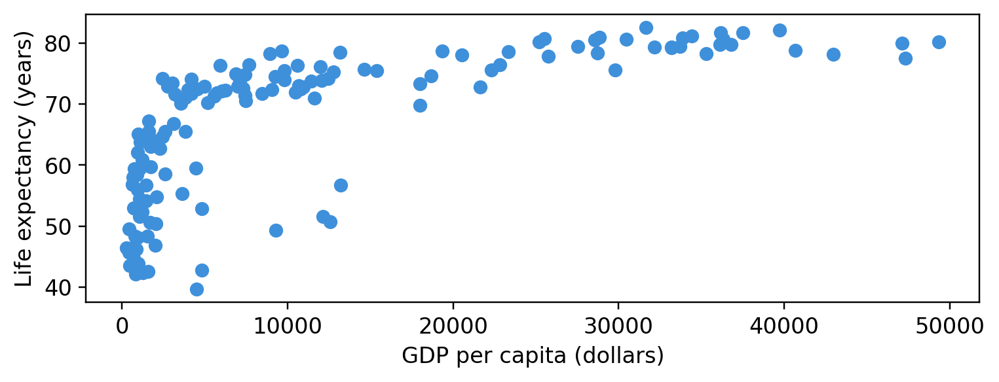
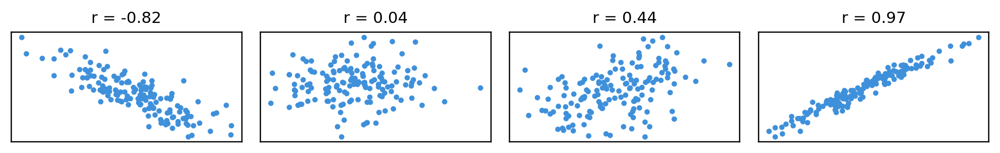
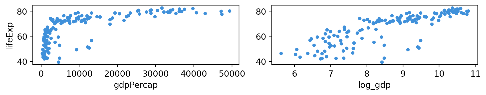
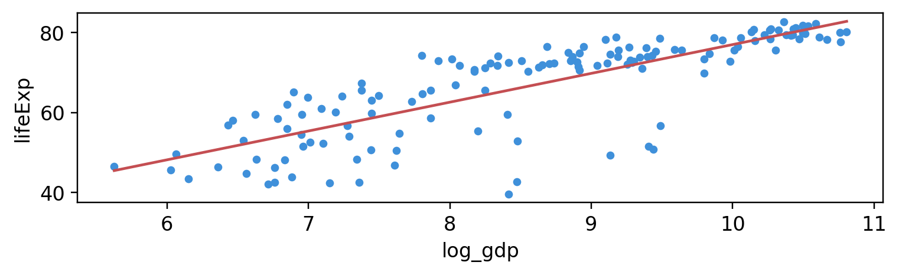
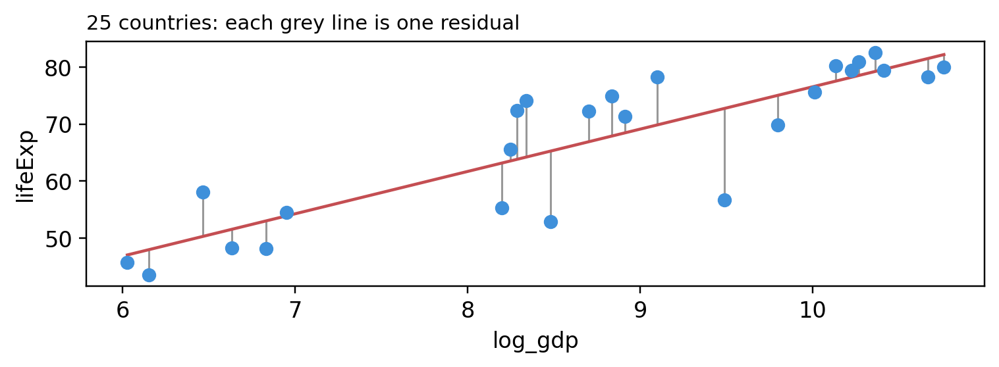
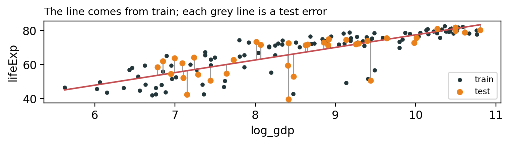
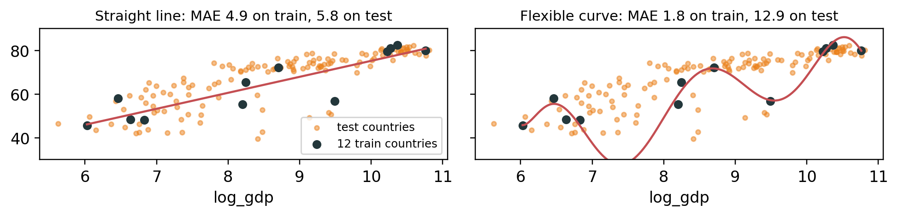

Lecture 8: Statistics, Regression and Prediction
BAA1118 - Foundations of Programming for Analytics & AI
Install the Packages
You only need to do this once. In a VS Code notebook, run this line in a code cell:
- Use
%pip, not!pip:%pipinstalls into the Python that runs your notebook, while!pipcan install into a different Python and the import then fails - Wait until the cell finishes, then click Restart in the notebook toolbar
- If a package is already installed, pip says “Requirement already satisfied”, which is fine
Then run the Setup cell on the next slide. If it gives no error, everything is installed.
Setup
The table from lecture 6. Most of this lecture uses g2007, the 142 countries of 2007.
Your Turn: Get Set Up
- In VS Code, open your
BAA1118folder, thenFile -> New File... -> Jupyter Notebook - At the top right, click Select Kernel, then Python Environments…, then the Python that says 3.14
- In the first cell, run
%pip install numpy pandas matplotlib statsmodels scikit-learn. When it has finished, click Restart - In a second cell, run:
import numpy as np
import pandas as pd
import matplotlib.pyplot as plt
import statsmodels.formula.api as smf
import sklearn
url = "https://raw.githubusercontent.com/damien-dupre/data/refs/heads/master/gapminder.csv"
gapminder = pd.read_csv(url)
g2007 = gapminder[gapminder["year"] == 2007]
print(g2007.shape)You should see Python 3.14 at the top right, then (142, 6). Save the notebook in BAA1118 as lecture_8.ipynb. Keep it open: today’s exercises reuse these libraries and gapminder. Done? Help your neighbour.
When It Does Not Work
| What you see | What to do |
|---|---|
No Jupyter Notebook in New File... |
Install the Python and Jupyter extensions: tutorial 5, step 2 |
| No Python 3.14 in the kernel list | Quit VS Code completely and open it again. Still none? Install Python as in tutorial 5, step 1 |
VS Code asks to install ipykernel |
Click Install |
ModuleNotFoundError |
Select Python 3.14, run the %pip cell again, then click Restart |
CERTIFICATE_VERIFY_FAILED, on a Mac |
In Applications, open the Python 3.14 folder and double-click Install Certificates.command. Then run the cell again |
A network error in the %pip cell |
Run the cell again |
| No Python or VS Code on your laptop | Follow today in Colab, where these packages are already installed. Then set up with tutorial 5, on Loop |
Test 2, on 26 November, runs in a VS Code notebook: fix your setup now, not on the day.
1. Correlation
Is a Richer Country a Healthier One?

- In 2007, countries with higher incomes tend to have longer lives
- Correlation sums this up in one number
Correlation

rruns from −1 to +1 and measures how close the points are to a straight line- Its sign gives the direction, its size the strength. Here, 0.68: up together
Several Columns at Once
| lifeExp | gdpPercap | pop | |
|---|---|---|---|
| lifeExp | 1.00 | 0.68 | 0.05 |
| gdpPercap | 0.68 | 1.00 | -0.06 |
| pop | 0.05 | -0.06 | 1.00 |
- Each pair of columns gets its r, and each column with itself gives 1
popandlifeExp: 0.05, almost no link between a country’s size and its life expectancy
Correlation Only Sees Straight Lines
0.81
np.log() turns doublings into equal steps, as the log axis did in lecture 7. The curve becomes a straight line, and r goes from 0.68 to 0.81.
Correlation Is Not Causation
Important
A correlation finds an association. Richer countries also have more doctors, cleaner water and more schooling: income stands in for all of them.
- You may write: “in 2007, countries with higher incomes had longer life expectancies”
- You may not write: “raising income raises life expectancy”
- r near 0 does not mean no relationship, only no straight-line one. Plot first, as Anscombe showed in lecture 7
Your Turn: Correlation and Shape
The 1952 countries. Replace each ____, using the comments:
You should see 0.28, then 0.75. In 1952, how strongly was income related to life expectancy? A straight line, or a curve?
Solution
0.28
0.750.28 as it is, but 0.75 after the log: a strong relationship, but a curved one, as in 2007. Log first, then correlate.
2. Linear Regression Models in Python
From Correlation to a Line
Correlation measures the link. Linear regression draws the line:
\[\text{lifeExp} = b_0 + b_1 \times \text{log_gdp} + e\]

- \(b_0\), the intercept: the value of
lifeExpwhenlog_gdpis 0 - \(b_1\), the slope: how much
lifeExpchanges whenlog_gdpincreases by 1
The Line of Best Fit

- \(e\), the residual: how far each country is from the line, actual minus predicted
- The line of best fit keeps the residuals as small as possible: its method is called ordinary least squares, or OLS
Fitting a Model in Python
smf.ols() needs two things: a formula, the equation, and the data.
Intercept 4.95
log_gdp 7.20
dtype: float64smf.ols()sets the model up,.fit()finds the line, and.paramsgives its two estimates: \(b_0\), calledIntercept, and \(b_1\)
Reading the Estimates
The two estimates, back in the equation:
\[\text{lifeExp} = 4.95 + 7.20 \times \text{log_gdp}\]
- \(b_1\) = 7.20: one more unit of
log_gdpis associated with 7.2 more years of life expectancy - \(b_0\) = 4.95: the prediction when
log_gdpis 0, far outside the data. Do not interpret it - Write “is associated with”, never “causes”
From Equation to Formula
The formula is the equation, written for Python:
- The
=sign becomes~ - Each predictor is added with
+ - No \(b\) and no \(e\): Python adds them itself
\[\text{lifeExp} = b_0 + b_1 \times \text{log_gdp} + e\]
More Than One Predictor
A categorical predictor, such as continent, goes inside C():
\[\text{lifeExp} = b_0 + b_1 \times \text{log_gdp} + b_2 \times \text{continent} + e\]
- Any number of predictors can be added the same way, each with
+ - Section 3 reads what this model finds
Your Turn: From Equation to Formula
The 1952 countries. Replace each ____ with a model’s formula:
g1952 = gapminder[gapminder["year"] == 1952]
g1952["log_gdp"] = np.log(g1952["gdpPercap"])
model1 = smf.ols(____, data=g1952).fit() # model 1, in quotes
model2 = smf.ols(____, data=g1952).fit() # model 2, the continent inside C()
print(round(model1.params["log_gdp"], 2))
print(round(model2.params["log_gdp"], 2))Model 1: \(\text{lifeExp} = b_0 + b_1 \times \text{log_gdp} + e\)
Model 2: \(\text{lifeExp} = b_0 + b_1 \times \text{log_gdp} + b_2 \times \text{continent} + e\)
You should see 8.83, then 4.77.
Solution
g1952 = gapminder[gapminder["year"] == 1952]
g1952["log_gdp"] = np.log(g1952["gdpPercap"])
model1 = smf.ols("lifeExp ~ log_gdp", data=g1952).fit()
model2 = smf.ols("lifeExp ~ log_gdp + C(continent)", data=g1952).fit()
print(round(model1.params["log_gdp"], 2))
print(round(model2.params["log_gdp"], 2))8.83
4.77With the continent in the model, the income slope falls from 8.83 to 4.77: part of what income seemed to explain was the continent.
3. Linear Regression Results
The Table of Estimates
.summary() prints the full results. Its second table, .tables[1], holds the estimates:
==============================================================================
coef std err t P>|t| [0.025 0.975]
------------------------------------------------------------------------------
Intercept 4.9496 3.858 1.283 0.202 -2.677 12.576
log_gdp 7.2028 0.442 16.283 0.000 6.328 8.077
==============================================================================coef: the estimates, as inmodel.params- The other columns say how sure we can be of each one
How Sure Are We?
Other countries, or another year, would give a slightly different slope. The table says by how much:
std err, the standard error: how much the estimate would change with other data[0.025 0.975], the 95% confidence interval: slopes from 6.3 to 8.1 are compatible with the dataP>|t|, the p-value: if the true slope were 0, how often would chance alone give one this far from 0? Below 0.05, the slope is significantly different from 0. Here,0.000- A p-value is not the probability that the result is true
- A table showing
0.000means below 0.0005: write p < 0.001
How Well Does It Fit?
- R² = 0.65: the model accounts for 65% of the variation in life expectancy between countries
- The other 35% is how far countries sit above or below what their income predicts
Warning
A high R² does not make a model right, nor a low one useless: judge it by what it is for.
A Categorical Predictor
Intercept 20.14
C(continent)[T.Americas] 11.69
C(continent)[T.Asia] 10.11
C(continent)[T.Europe] 11.27
C(continent)[T.Oceania] 12.93
log_gdp 4.63
dtype: float64- Africa, first in alphabetical order, is the reference: each continent’s estimate is a difference from Africa
- At the same income, life expectancy is 11.3 years higher in Europe than in Africa, on average
Your Turn: Read the Results
The 1952 countries. Replace each ____, using the comments:
g1952 = gapminder[gapminder["year"] == 1952]
g1952["log_gdp"] = np.log(g1952["gdpPercap"])
model = smf.ols("lifeExp ~ log_gdp", data=g1952).fit()
print(model.summary().____[1]) # the estimates, with .tables
print(round(model.params["log_gdp"], 2)) # the slope
print(round(model.____, 2)) # R², with .rsquaredYou should see the table, then 8.83 (the slope) and 0.56 (R²). Is the slope significant? What share of the variation does income account for?
Solution
==============================================================================
coef std err t P>|t| [0.025 0.975]
------------------------------------------------------------------------------
Intercept -17.8457 5.067 -3.522 0.001 -27.863 -7.828
log_gdp 8.8298 0.663 13.326 0.000 7.520 10.140
==============================================================================
8.83
0.56Yes: p is below 0.001, and 0 is outside 7.52 to 10.14. Income accounted for 56% of the variation in 1952, against 65% in 2007.
4. Prediction
From Explaining to Predicting
- Sections 2 and 3 explained: how life expectancy goes with income, and how sure we are of it
- The same line can also predict: a best guess of a country’s life expectancy, from its income alone
- Businesses predict all the time: tomorrow’s sales, next month’s demand, the price of a house
This section answers three questions, in order: how to predict, how wrong the predictions are, and how to measure that honestly.
Predicting One New Value
Back to the 2007 model. Fit it, put the new income in a table, and predict. Here, a country with $10,000 per person:
0 71.3
dtype: float64predict()needs a table with the same column as the formula:log_gdp- By hand: \(b_0 + b_1 \times \text{log_gdp}\) = 4.95 + 7.20 × 9.21 = 71.3 years
- A best guess, not a fact: real countries sit above or below the line
Predicting for Several Countries
One row per country. np.log() takes the whole list of incomes at once:
0 59.7
1 71.3
2 82.1
dtype: float64- Rows 0, 1 and 2 are the incomes $2,000, $10,000 and $45,000
Warning
Only predict inside the range of the data: incomes from $278 to $49,357 in 2007. For $500,000, the line predicts 99.5 years. It has never seen such a country, and neither have you.
How Wrong Are the Predictions?
To find out, predict the countries whose life expectancy we already know, and compare:
| country | lifeExp | predicted | error | |
|---|---|---|---|---|
| 11 | Afghanistan | 43.8 | 54.5 | -10.7 |
| 23 | Albania | 76.4 | 67.5 | 8.9 |
| 35 | Algeria | 72.3 | 67.9 | 4.4 |
| 47 | Angola | 42.7 | 66.0 | -23.3 |
- The error: actual minus predicted, the residual of section 2
- Albania lives 8.9 years longer than its income predicts; Angola 23.3 years shorter
One Number for All the Errors
MAE 5.1 years; RMSE 7.1 years- MAE, the mean absolute error: drop the signs with
.abs(), then take the mean. A prediction misses by 5.1 years on average - Why
.abs()? Errors above and below the line would cancel out: their mean is 0 - RMSE, the root mean squared error: square the errors, take the mean, then the square root. Big misses count more
- Both are in years: the smaller, the better
Marking Your Own Homework
The 5.1 years is too optimistic:
- These are the 142 countries that drew the line: OLS put it as close as possible to them
- A new country had no say in where the line goes, so it will usually be missed by more
- It is like practising on the exam paper itself: a great score, but it says nothing about a new paper
Important
To know how wrong a model will be on new data, measure it on data it has not seen.
Train and Test
Before fitting, put a quarter of the countries aside:
106 countries to fit the model, 36 to test it- train: 75% of the countries, drawn at random, to fit the model
- test: the other 25%, kept aside: for the model, they are new countries
random_statefixes the random draw: the same split every time
Every machine learning model, from a regression to a neural network, is judged this way.
Fit on Train, Measure on Test
MAE on train: 4.9 years
MAE on test: 5.7 years
- Train: 4.9 years. Test: 5.7 years, the honest figure for a new country
- The RMSE agrees: 6.7 years on train, 8.0 on test
Why It Matters: Overfitting

A more flexible model can bend to pass close to every train country. Fitted on 12 countries, the curve misses them by 1.8 years on average, but misses the others by 12.9: it has learned the noise of its 12 countries, not the pattern. This is overfitting, and only the test set shows it.
The Same Pattern in scikit-learn
scikit-learn, the main machine learning library, fits the same line on train:
3.62 [7.38]
[3.62, 7.38]- The same intercept and slope as
smf.ols()ontrain - Predictors in a table, hence two brackets; the outcome is one column
- Choose a model,
.fit(),.predict(): the same three steps for every model
What You Can and Cannot Write
In 2007, across 142 countries, one more unit of log GDP per capita was associated with 7.2 more years of life expectancy (95% CI 6.3 to 8.1), and income accounted for 65% of the variation. On 36 test countries, kept aside from fitting, predictions missed by 5.7 years on average.
- Numbers with their uncertainty and their scope
- No cause: “associated with”, not “raises”
- No extrapolation: nothing about incomes outside $278 to $49,357
Your Turn: Predict
With the continent. Replace each ____, using the comments:
g2007["log_gdp"] = np.log(g2007["gdpPercap"])
train = g2007.sample(frac=____, random_state=1118) # 75% of the countries
test = g2007.drop(train.____) # the rest, with .index
fit2 = smf.ols("lifeExp ~ log_gdp + C(continent)", data=____).fit() # on train
errors2 = test["lifeExp"] - fit2.predict(____) # on test
print(round(errors2.____().mean(), 1)) # the MAE, with .abs()
print(round(np.sqrt((errors2 ** 2).mean()), 1)) # the RMSEYou should see 4.0, then 6.0. Without the continent: 5.7 and 8.0. Does the continent improve the predictions?
Solution
g2007["log_gdp"] = np.log(g2007["gdpPercap"])
train = g2007.sample(frac=0.75, random_state=1118)
test = g2007.drop(train.index)
fit2 = smf.ols("lifeExp ~ log_gdp + C(continent)", data=train).fit()
errors2 = test["lifeExp"] - fit2.predict(test)
print(round(errors2.abs().mean(), 1))
print(round(np.sqrt((errors2 ** 2).mean()), 1))4.0
6.0Yes: on the same 36 test countries, the average miss falls from 5.7 to 4.0 years, and the RMSE from 8.0 to 6.0.
References
- OpenIntro Statistics: a free textbook, from summaries to regression
- Seeing Theory: probability and statistics, drawn and animated
- Fitting models using R-style formulas: statsmodels’ guide to the formulas of
smf.ols() - An Introduction to Statistical Learning, with Applications in Python: free online; chapters 2 and 3 cover this lecture
Test 2: Thursday 26 November
- In class, one hour, in a notebook in VS Code: you write and run the code, as in the tutorials
- It covers the pandas, matplotlib, statistics and regression of lectures 6, 7 and 8
- The best revision: redo every Your Turn from lectures 6 to 8 without the solution, then check

Thanks for your attention and don’t hesitate to ask if you have any questions!